2026년 행정사무감사 질의서 (발언용 · 5분)
비위는 밖에서 먼저 찾았습니다
— 출연금 0원 시대, 도는 무엇으로 경기문화재단을 감독합니까
문화체육관광위원회 황은화 위원 → 문화체육관광국장(문화정책과)
| ① 외부가 먼저 찾은 비위 | 파면은 국민권익위원회 이첩, 감봉·해임은 공익제보 특정감사. 3년간 공익제보 특정감사 7건 vs 도 지도점검 지적은 "여비 정산" 1건 → 도의 감독은 비위를 한 건도 먼저 찾지 못했다 |
| ② 3년째 이어지는 징계 | 징계 1건(2024) → 4건(2025) → 3건(2026.10.12.), 성폭력·괴롭힘 재발방지 조치 "-" → 작년 행감 지적을 "완료"한 뒤에도 감봉·해임이 나왔다 |
| ③ 출연금 0원 | 재단 출연금 521억(2025) → 232억(2026) → 0원(2027안), 대신 기본재산 539억 원 투입 → 잔액 약 369억 원 → 감독의 고리와 재원이 함께 사라진다 |
■ 발언 — 도입
국장님, 경기문화재단의 공직기강과 도의 관리·감독에 대해 묻겠습니다.
재단이 제출한 자료를 보면 최근 3년간 직원 징계는 8건입니다. 그중 파면 1건, 해임 2건, 신분을 박탈한 중징계가 3건입니다. 2024년 1건이던 징계는 2025년 4건, 올해는 10월까지 3건입니다.
더 눈여겨볼 것은 비위가 드러난 경로입니다. 파면은 국민권익위원회가 찾아냈고, 감봉과 해임은 공익제보로 시작된 특정감사에서 나왔습니다. 3년 동안 공익제보로 시작된 특정감사만 7건입니다.
오늘은 재단 직원 한 사람 한 사람의 잘못을 따지려는 것이 아닙니다. 출연기관을 관리하는 문화정책과가 무엇을 알았고, 무엇을 했으며, 앞으로 무엇으로 감독할 것인지, 세 가지를 확인하겠습니다.
▶ 질문 1 — 외부가 먼저 찾아낸 비위, 도는 1년 동안 무엇을 했습니까
2025년 3월 17일, 국민권익위원회는 지자체 산하 문화재단 공직자가 아내 명의 무자격 업체로 40억 원 용역을 하도급받았다고 발표했습니다. 허위 출장을 신청하고 문화재단 예산으로 중장비를 빌리고 자재를 샀다는 내용입니다. 권익위는 이 사건을 "감독기관 및 대검찰청에" 이첩했습니다. 도는 늦어도 그때 공식적으로 알았습니다. 그런데 도 감사위원회가 재단에 조사결과를 알린 날은 2026년 3월 13일, 1년 뒤입니다. 재단은 그사이 결과보고 기한을 연장했고, 파면은 2026년 5월 13일에야 이뤄졌습니다.
같은 기간 도의 점검은 무엇을 찾았습니까. 재단 감사 목록에는 「경기문화재단 운영 지도점검 결과」에 따른 감사가 있습니다. 지적은 "여비 신청 정산 업무처리 부적정" 한 건입니다. 같은 해 공익제보로 시작된 특정감사는 4건입니다. 재단 예산으로 중장비를 빌리는 동안, 점검은 그것을 보지 못했습니다. 도가 이 사건을 처음 보고받은 날짜와 문서는 무엇입니까? 이첩 이후 1년 동안 문화정책과가 재단에 요구한 조치가 있습니까? 그 지도점검의 범위에 용역·계약 집행이 들어 있었습니까?
▷ "개별 직원의 비위는 재단 자체 감사와 도 감사위원회 소관입니다."
→ 출연기관 관리·감독은 문화정책과의 일입니다. 감사위원회가 1년간 조사하는 동안 소관 부서가 재단에 내부통제 점검을 요구한 공문이 있다면 제출해 주십시오. 지도점검 결과보고서도 함께 제출해 주십시오.
▷ "재단의 보고가 늦었습니다."
→ 재단은 직원 사칭 피해까지 분기마다 도 공공기관담당관실에 보고합니다. 그런데 직원 비위와 징계는 보고받는 체계가 없습니까?
[근거] 국민권익위원회 보도자료(2025.3.17.) — 감독기관·대검 이첩 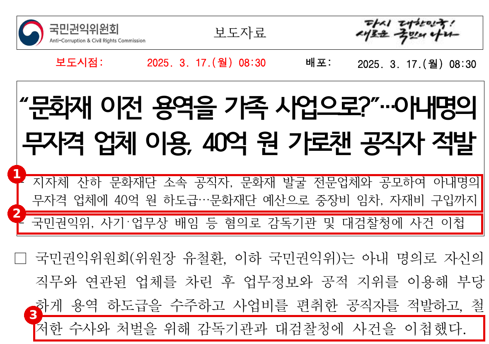
※ 출처: 국민권익위원회 보도자료 「"문화재 이전 용역을 가족 사업으로?"…아내명의 무자격 업체 이용, 40억 원 가로챈 공직자 적발」(2025.3.17.) 1쪽 (원문 재현, 발췌) |
[근거] 재단 39 — 「2025년 제1차 특정감사」 완료 보고: 이첩에서 처분까지 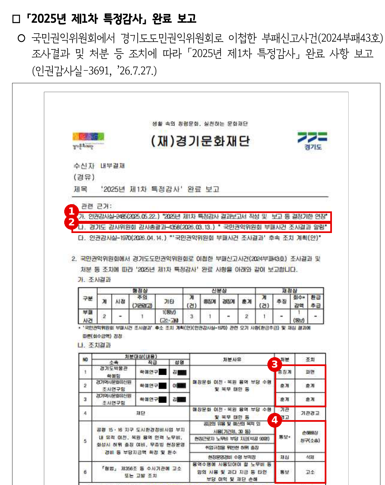
※ 출처: 「2026년도 행정사무감사 요구자료(기관)」 재단 39 「2026년도 특정감사 결과 및 조치자료」 435쪽, 「2025년 제1차 특정감사」 완료 보고(인권감사실-3691, '26.7.27.) (원문 재현, 발췌. 성명은 원문 가림 처리, 하단 개인 지급 내역은 생략) |
[근거] 공통 42 — 2024년 감사 현황: 도 지도점검은 "여비 정산", 나머지는 공익제보 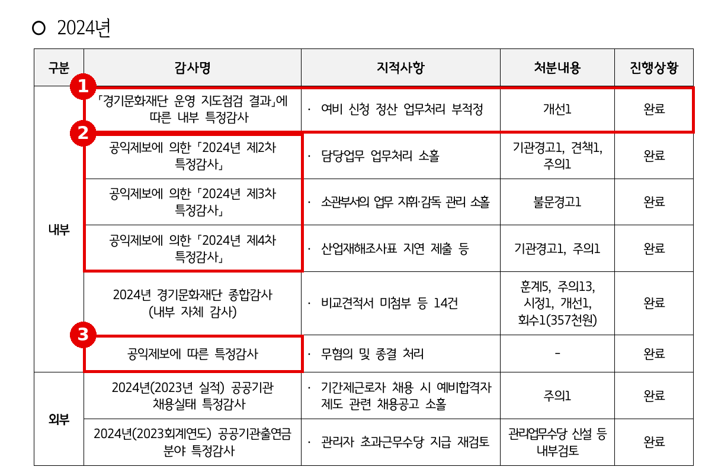
※ 출처: 「2026년도 행정사무감사 요구자료(공통2권)」 공통 42 「최근 3년간 감사·수사·징계 현황」 2024년 표 (원문 재현). 7건은 2024~2026년 표를 의원실이 집계 |
[근거] 공통 03 — 사칭 피해는 분기마다 도에 보고 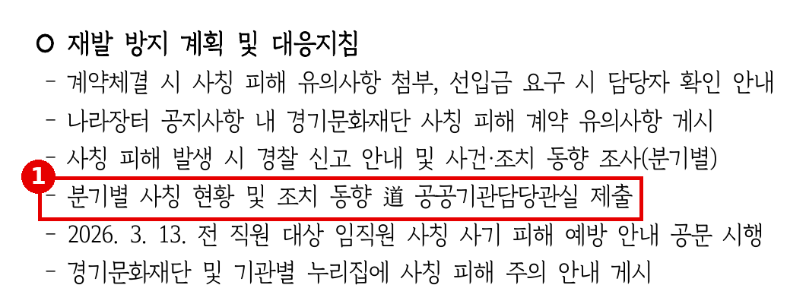
※ 출처: 「2026년도 행정사무감사 요구자료(공통2권)」 공통 03 「문화체육관광국 소관 공공기관 임직원 사칭 피해 및 대응 현황」 재발 방지 계획 (원문 재현, 발췌) |
▶ 질문 2 — 3년째 이어지는 징계, 작년 지적은 "완료"였습니다
징계 사유를 보면 한 사람의 일탈이 아니라 기강 전반의 문제입니다. 2025년에는 직장 내 성폭력으로 해임, 직장 내 괴롭힘으로 견책, 복무감사로 정직과 견책이 있었습니다. 그런데 성폭력과 괴롭힘 두 건의 재발방지 조치 칸은 "-", 비어 있습니다. 2026년에는 근무지 무단 이석과 퇴근 기록 허위로 감봉, 공모사업 심사 절차 부당개입(직권남용)으로 해임이 나왔습니다. 두 건 모두 공익제보로 시작됐습니다.
이 문제는 작년 이 자리에서 이미 지적됐습니다. 2025년 행정사무감사는 [시정-1] "하도급 비리 재발 방지를 위한 내부관리·감독 체계 전면 개선"을 요구했습니다. 재단은 2025년 12월 4일 규칙 두 개를 개정하고 "완료"라고 보고했습니다. 그런데 석 달도 지나지 않아 공익제보로 특정감사가 시작됐고, 감봉과 해임이 나왔습니다. 출연기관 관리 부서로서 재단의 복무·감사 체계를 직접 점검한 기록이 있습니까? 재단의 "완료" 보고를 도가 확인했습니까?
▷ "재단이 공직기강 TFT를 구성하고 반부패 개선을 추진하고 있습니다."
→ TFT 구성은 재발방지의 계획일 뿐입니다. 성폭력과 괴롭힘에는 그 계획조차 없습니다. TFT 회의 결과와 이행 점검표를 제출해 주십시오.
▷ "행감 지적사항 조치는 재단이 이행하고 국에서 취합합니다."
→ 취합만 하면 확인한 사람은 없습니다. "완료" 판정은 누가, 무엇을 보고 내린 것입니까?
[근거] 재단 12 — 연도별 징계 현황과 사유 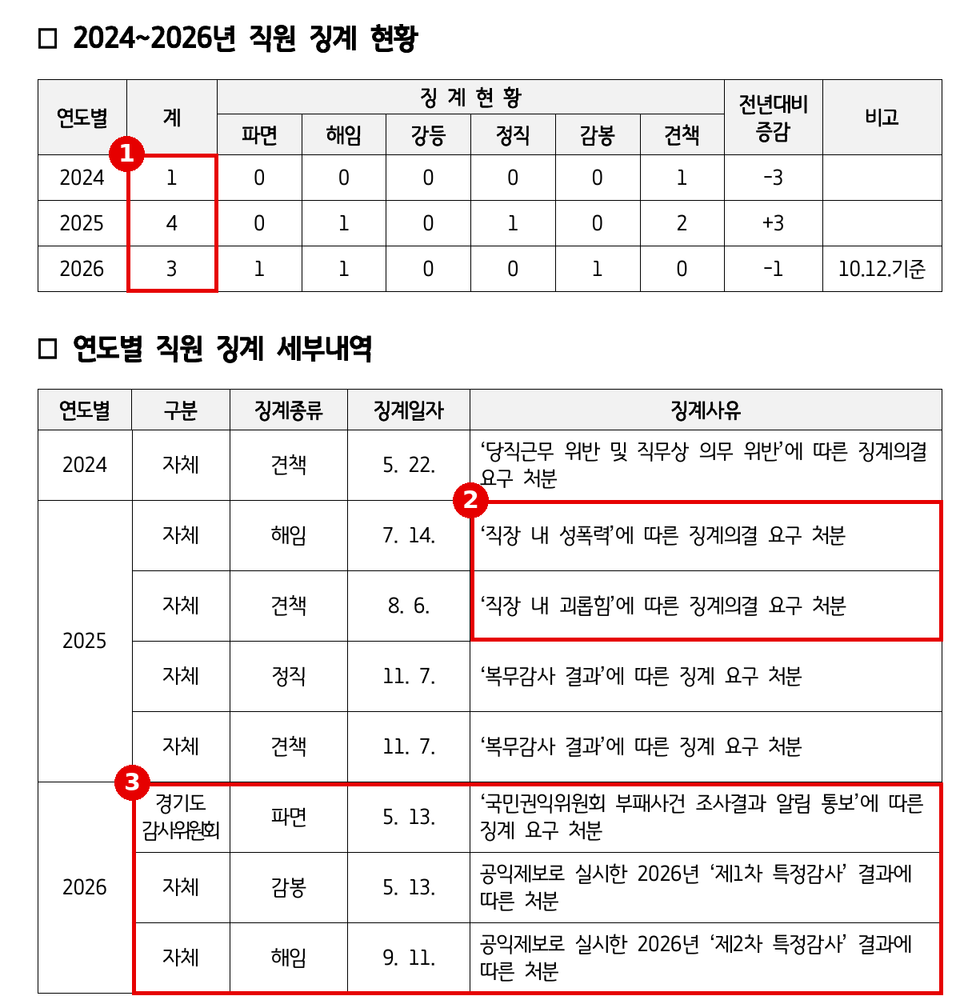
※ 출처: 「2026년도 행정사무감사 요구자료(기관)」 재단 12 「최근 3년 직원 징계 내역 및 조치 결과」(황은화 의원 등 요구) (원문 재현, 발췌) |
[근거] 공통 42 — 징계별 재발방지 조치 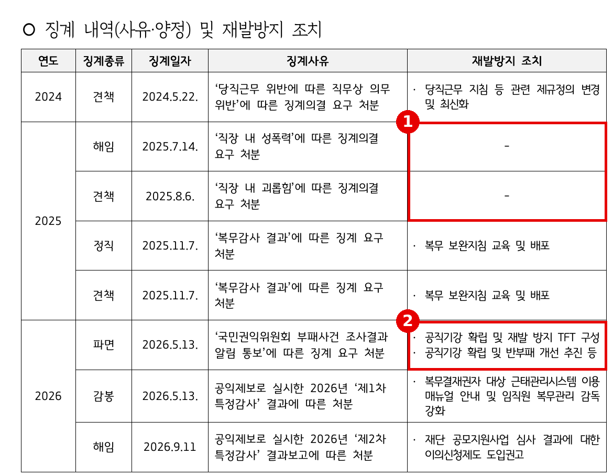
※ 출처: 「2026년도 행정사무감사 요구자료(공통2권)」 공통 42 「최근 3년간 감사·수사·징계 현황」 징계 내역 및 재발방지 조치 (원문 재현) |
[근거] 재단 39 — 2026년 공익제보 특정감사 2건 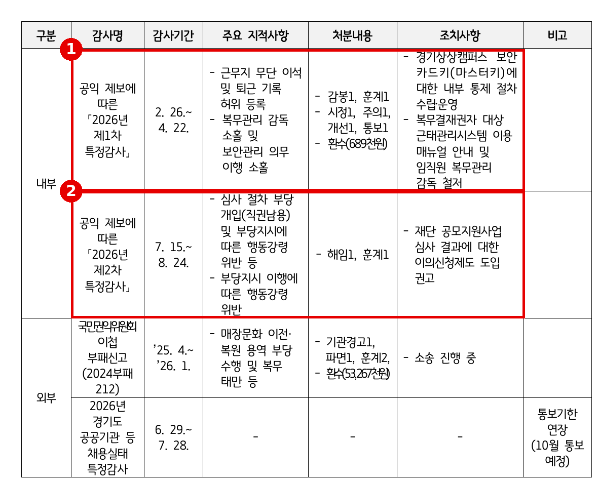
※ 출처: 「2026년도 행정사무감사 요구자료(기관)」 재단 39 「2026년도 특정감사 결과 및 조치자료」 430쪽 (원문 재현, 발췌) |
[근거] 공통 01 — 2025년 행감 [시정-1]은 "완료" 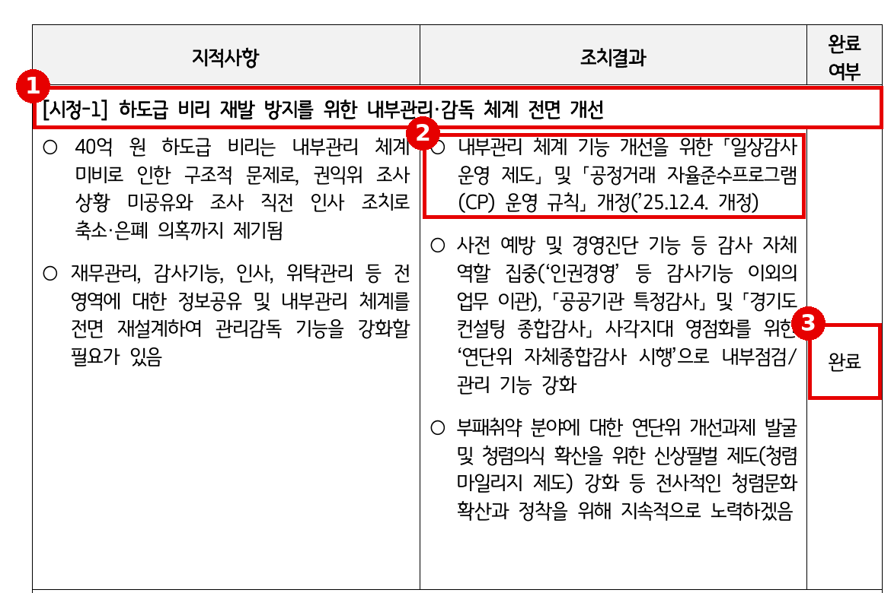
※ 출처: 「2026년도 행정사무감사 요구자료(공통1권)」 공통 01 「2025년도 행정사무감사 지적사항 조치 결과」 (원문 재현, 발췌) |
[근거] 2025년 행감 보도 — "외부기관이 먼저 비리 포착" 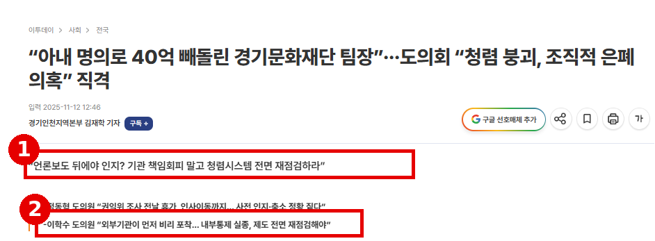
※ 출처: 이투데이 「"아내 명의로 40억 빼돌린 경기문화재단 팀장"…도의회 "청렴 붕괴, 조직적 은폐 의혹" 직격」(2025.11.12.) https://www.etoday.co.kr/news/view/2524754 (화면 갈무리, 광고 영역 제외) |
▶ 질문 3 — 출연금 0원 시대, 무엇으로 감독합니까
지금까지 도가 재단을 관리한 가장 강한 수단은 출연금이었습니다. 교부하고, 정산하고, 남으면 반납받았습니다. 그 출연금이 2025년 521억 원에서 2026년 232억 원, 2027년 본예산안에서는 0원입니다. 인건비 99억, 운영비 56억, 사업비 52억 원이 모두 "도 재정 여건 악화에 따른 세출 구조조정 및 출연금 미편성"입니다. 대신 기본재산 539억 원을 쓰도록 했습니다. 같은 국 소관인 경기관광공사는 내년에도 출연금 129억 원이 편성됐습니다.
기본재산은 2025년까지 1,200억 원이었습니다. 올해 출연금 부족분을 메우느라 291억 8천만 원을 꺼내 908억 원이 됐습니다. 내년에 539억 원을 더 쓰면 약 369억 원이 남습니다. 3년 만에 기본재산의 70%가 사라지고, 2028년 한 해 운영비에도 모자랍니다. 게다가 지난 9월 도는 2027년 재단 출연금 472억 2천만 원을 담은 출연계획 동의안을 의회에 냈습니다. 한 달 뒤 본예산안은 0원입니다. 출연금이 사라지면, 비위가 이어진 기관을 들여다볼 도의 고리도 함께 느슨해집니다. 출연금이 0원이 되면 문화정책과는 재단의 예산 집행을 무엇으로 점검합니까? 기본재산 활용을 결정하면서 내부통제 이행을 조건으로 붙였습니까? 2028년 재단 운영비는 어디서 나옵니까?
▷ "기본재산 활용은 재정 여건상 불가피한 한시 조치입니다."
→ 한시 조치라면 끝나는 해가 있어야 합니다. 남는 369억 원으로는 2028년을 버틸 수 없습니다. 2028년 이후 재원 계획을 제출해 주십시오.
▷ "출연금이 없어도 경영평가와 지도점검으로 관리합니다."
→ 그 지도점검이 찾은 것은 여비 정산 한 건이었습니다. 출연금 정산이라는 고리마저 없어지면, 9월 동의안의 472억 원과 10월 본예산안의 0원 중 어느 것이 도의 계획입니까?
[근거] 2027년 본예산 기관별 편성안 78쪽 — 재단 출연금 전액 미편성 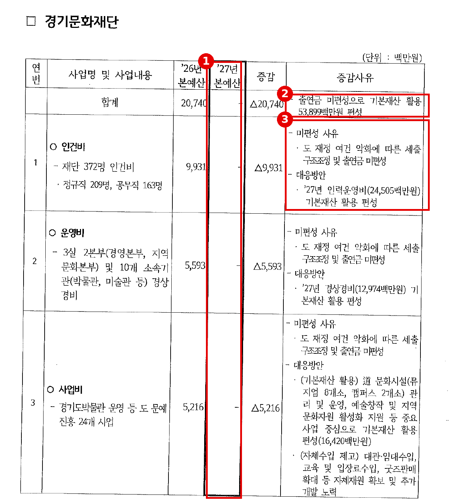
※ 출처: 「2026 하반기 현장정책회의 — 문화체육관광국 본예산안」(2026.10.26.) 별첨 「2027년 본예산 기관별 주요사업 편성안」 78쪽 (원문 재현, 발췌) |
[근거] 공통 46 — 출연금 추이와 기본재산 전출 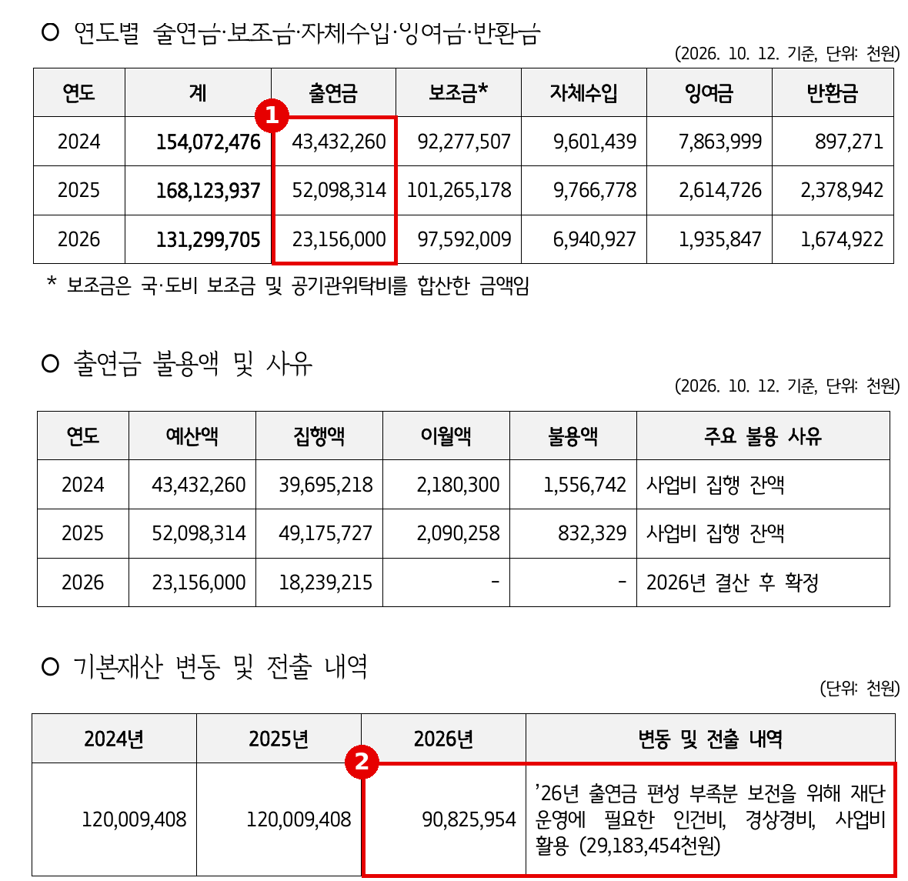
※ 출처: 「2026년도 행정사무감사 요구자료(공통2권)」 공통 46 「최근 3년간 출연금·보조금 집행 및 반환 현황」 (원문 재현). 잔액은 의원실 산출(90,825,954천원 − 53,899,000천원, 다른 변동이 없다는 전제) |
[근거] 2027년 출연계획 동의안 — 9월에는 472억 원
※ 출처: 서울신문 「안시현 경기도의원, 문화관광분야 출연계획 동의안 제출 절차 문제 지적」(2026.9.7.) https://go.seoul.co.kr/news/newsView.php?id=20260907500314 (요지 인용) — 동의안 원문 대조 필요 |
■ 마무리 · 요구사항
비위는 밖에서 먼저 찾았고, 징계는 3년째 이어지고, 이제 출연금이라는 감독의 고리마저 사라지려 합니다. 출연기관 관리는 돈을 보내는 것으로 끝나지 않습니다. 현장에서 무슨 일이 벌어지는지 도가 먼저 알고, 끝까지 챙기는 것이 관리·감독입니다.
하나, 문체국 소관 출연기관이 외부 조사·수사·징계 사실을 인지한 날부터 7일 이내 도에 보고하도록 지침을 정하고, 분기별 감사·징계 현황을 상임위원회에 보고하는 체계를 2026년 12월까지 마련해 주십시오.
둘, 2025년 행정사무감사 [시정-1]의 이행 실태를 문화정책과가 직접 점검하고, 성폭력·괴롭힘 재발방지 대책을 포함한 결과를 2027년 첫 임시회 전에 보고해 주십시오.
셋, 기본재산 활용에 내부통제 이행 조건을 붙이고, 기본재산 잔액 전망과 2028년 이후 재단 운영 재원 계획을 2027년도 예산안 의결 전에 제출해 주십시오.